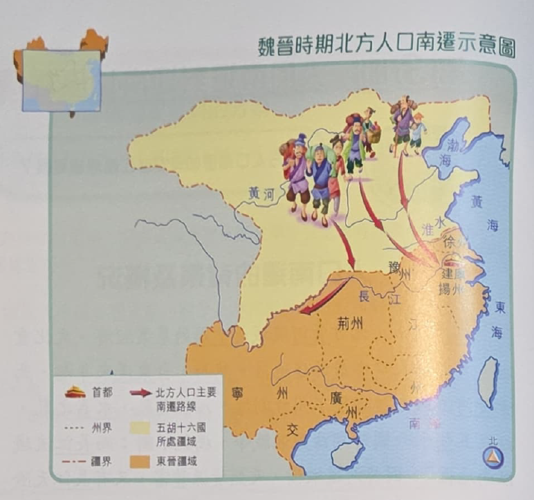
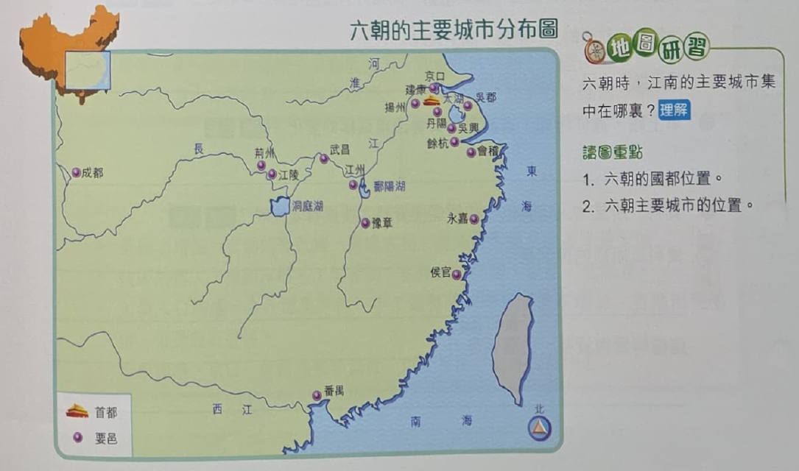

秦漢以來，北方黃河流域是中國的農業經濟、文化重心，絕大部分人口亦居於這地區。 然而，自東漢末年起，北方黃河流域先後經歷了州牧割據、八王之亂、永嘉之亂， 以及五胡十六國時期諸國混戰等，禍亂不斷， 而長江流域以南地區，因其河道縱橫，天然資源豐富，又有長江天險阻隔，較少受戰火破壞， 加上部分南方政權銳意發展，促使大量北方百姓南遷避亂。
東漢末至三國時期，以及西晉永嘉之亂至南朝宋時期，是兩次北方人口南遷的高峰期。 當時的南遷人口，主要向揚州一帶、荊州和巴蜀等地遷徙，尤以遷往揚州一帶為主。


北方人口南遷，帶來勞動力、資金和生產技術，對當地的經濟開發有很大貢獻。 大量南下的人口，成了開墾江南荒地、興修水利的重要勞動力，江南地區的耕地面積因而大增。 此外，南遷人口引入了北方的物種，如麥、菽，以及較先進的農業技術， 如牛耕、施肥等，令農產業量增加。 南方部分地區的稻米生產更由一年一至二熟，增加到一年三熟，甚至超越了北方。
南遷人口為各種手工業帶來新的技術和勞動力。 在煉鋼技術上，能生產百煉而成的鋼，製作刀劍，極其鋒利精巧。 紡織業比較普遍，四川織造的「蜀錦」久負盛名，揚州和荊州生產的絲綿布帛，足以「覆衣天下」。 此外，造紙技術也大為改進，南朝時，紙已經完全代替了簡帛，成為主要的書寫材料。 隨著南方的人口增多，北方為胡人所據，與西域間的陸路交通中斷， 朝廷更積極發展海事業，當時能夠製造載重為二萬斛的遠航大船。
隨著北方人口南遷，農業和手工業的興盛，促進了江南商業繁榮。 建康是當時江南最大的商業城市。 那裏集市繁多，商旅羣集，舟船萬計，非常繁華。 京口、會稽也是繁榮的商業都會，人口高達百多萬。番禺則是海外貿易中心。 大量波斯、大秦、天竺等地的商旅遠渡而來， 以香料、翡翠等，換取中國的絲綢、瓷器等產品，反映當時的商業活動非常繁盛。